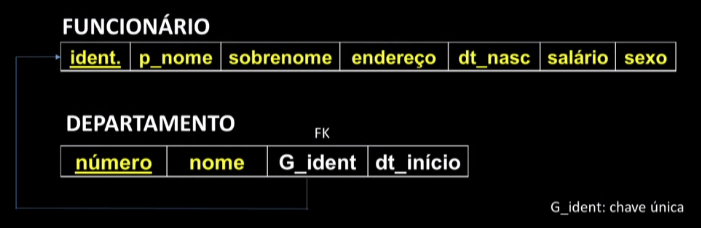
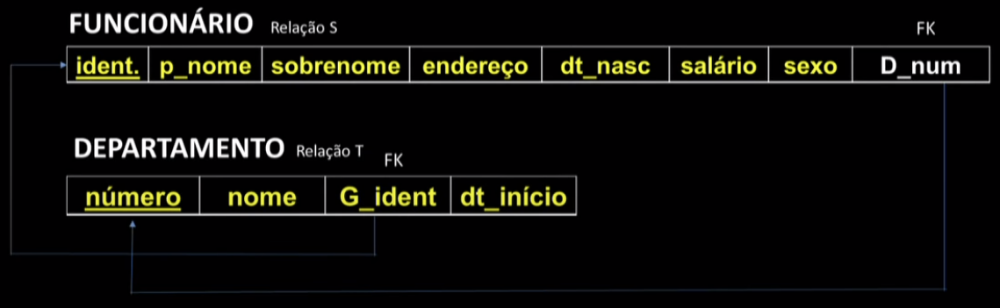
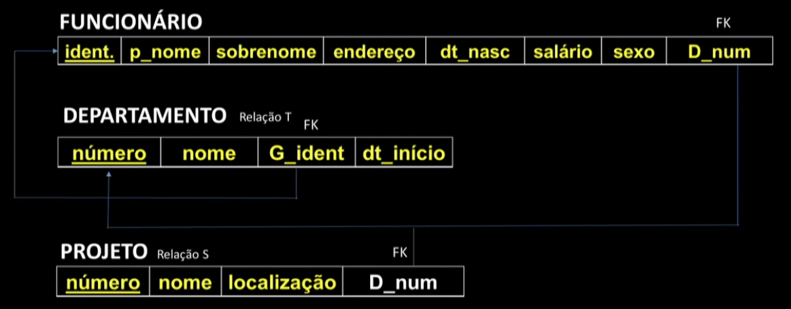
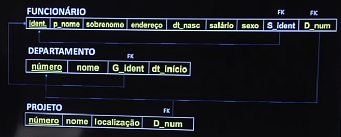
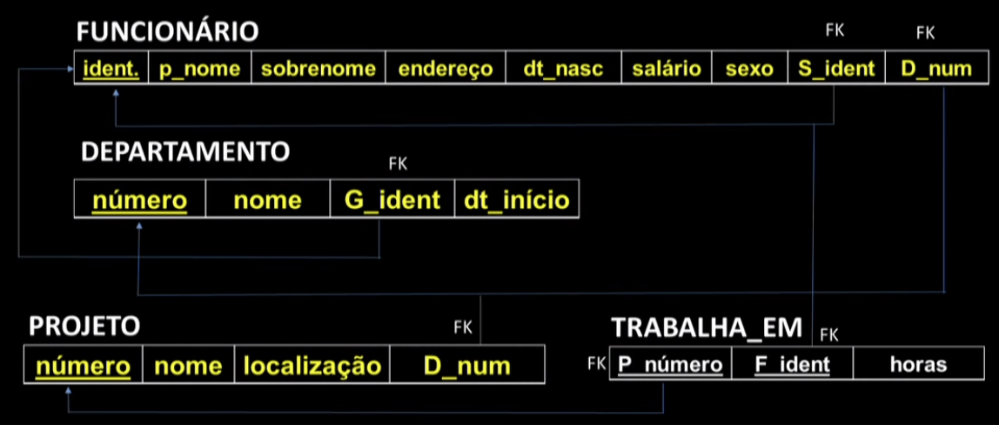
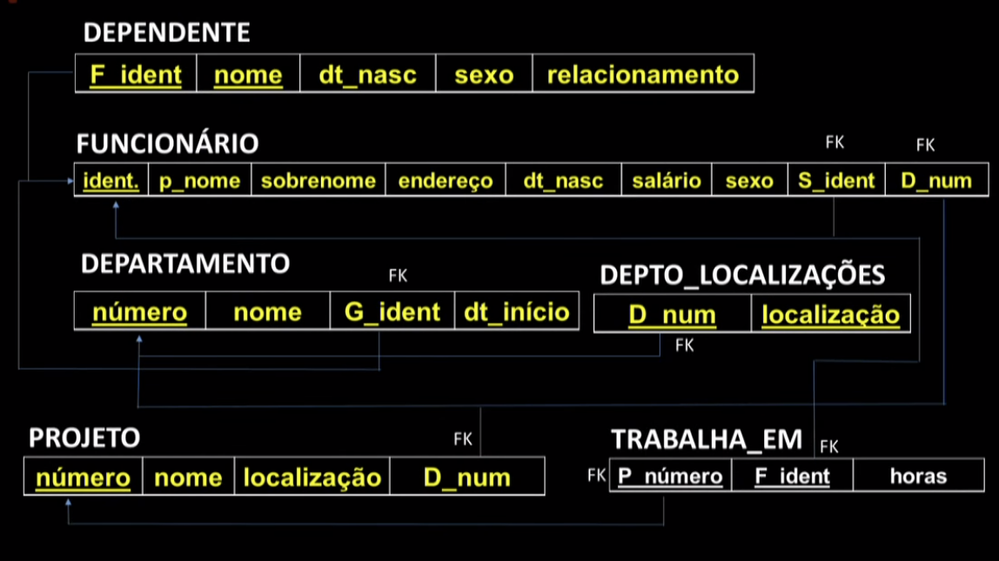

Disciplinas
-
BANCO DE DADOS-T01-2024-1 Concluído
Materiais
Vídeo 3 - Bancos de Dados - Aula 07 - Mapeamento MER → Relacional - Parte II: relacionamentos, cardinalidades. sendProfessor ministrante: Sarajane Peres.
Conteúdo
Mapeamento MER → Relacional.
relacionamentos, cardinalidades.
Mapeando tipos relacionamento binários 1:1:
Para cada tipo relacionamento binário 1:1 no MER, identifique as relações S e T que correspondem aos tipos entidade participantes no relacionamento.
Escolha uma abordagem:- 1. Abordagem da chave estrangeira (mais comum).
- 2. Abordagem da relação unificada.
- 3. Abordagem referência cruzada ou relação de relacionamento.
1. Abordagem da chave estrangeira:
- Escolha uma das relações, por exemplo a relação S - e inclua como chave estrangeira em S a chave primária de T;
- Se houver tipo entidade com participação total envolvido no relacionamento, escolhê-lo para o papel de S será a melhor opção;
- Inclua todos os atributos simples, e os componentes simples dos atributos compostos, do tipo relacionamento como atributos de S.
Escolhendo DEPARTAMENTO para o papel de S:
 FK = Chave primária.2. Abordagem da relação unificada:
- Unifique os dois tipos entidade e o tipo relacionamento é uma única relação;
- Isto é possível quando ambos tipos entidade possuem participação total, indicando que as duas relações referentes aos tipos entidade participantes do relacionamento possuem sempre o mesmo número de tuplas.
3. Abordagem referência cruzada:
- Crie uma terceira relação para atuar como uma referência cruzada das chaves primárias de cada uma das duas relações S e T;
- A terceira relação incluirá as chaves primárias de Se T como chaves estrangeiras;
- A chave primária da terceira relação será uma das duas chaves estrangeiras, e a outra chave estrangeira será uma chave única.
Mapeando tipos relacionamento binários 1:N (N:1).
- Para cada tipo relacionamento regular binário 1:N, identifique a relação S que representa o tipo entidade que participa do tipo relacionamento uma vez.
- Inclua a chave primária da relação T (a outra entidade que participa do relacionamento) como chave estrangeira na relação S;
- Inclua como atributo de S todos os atributos simples, e os componentes simples dos atributos compostos, do tipo relacionamento.
N para Um ou Um para N:
Mapeamento:
Um departamento controla vários projetos:
Mapeamento:
Binários 1:N (N:1):
Mapeamento:
Mapeando tipos relacionamento binários M:N:
- Para cada tipo relacionamento binário M:N, crie uma nova relação para representar o relacionamento;
- Inclua como chaves estrangeiras na nova relação as chaves primárias das relações que representam as entidades participantes do relacionamento;
- A chave primária da nova relação é a combinação dessas chaves estrangeiras;
- Também inclua todos os atributos simples, ou componentes simples de atributos compostos, como atributos na nova relação.
Mapeamento:
Mapeamento Relacional Completo:
Estes slides estão baseados na bibliografia:
Modelo Entidade-Relacionamento (MER) Parte I: entidades, atributos, chaves.